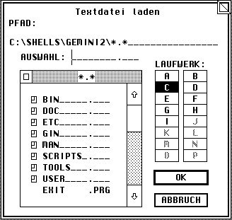

Die Funktionen dieser Bibliothek stellen eine Dateiauswahl zur Verfügung, mit deren Hilfe sich Dateien laden bzw. abspeichern lassen. Für diesen Zweck sind die folgenden Routinen vorhanden:
| • fsel_boxinput | Dateinamen per File-Selektor auswählen (Boxkite) |
| • fsel_exinput | Dateinamen per File-Selektor auswählen. |
| • fsel_input | Dateinamen per File-Selektor auswählen. |
Hinweis: Leider werden alternative Dateisysteme (Stichwort: lange Dateinamen) nicht unterstützt; ab MagiC 4 wird dies jedoch von den Funktionen der FSLX-Library übernommen.
Querverweis: Fileselektoren Style-Guidelines
| Name: | »File Selection Extended Input« - selektiert Dateinamen. | ||||||||||||||||||||
| AES-Nummer: | 91 | ||||||||||||||||||||
| Deklaration: | int16_t fsel_boxinput ( int16_t *global, int8_t *fs_einpath, int8_t *fs_einsel, int16_t *fs_eexbutton, int8_t *elabel, FSEL_CALLBACK callback ); | ||||||||||||||||||||
| Beschreibung: | Die Funktion stellt eine Dateiauswahlbox zur Verfügung, der
auch ein Titel-String übergeben werden kann. Es handelt sich hierbei um
eine erweiterte Version der Dateiauswahl BoxKite. Der Funktion werden folgende Parameter übergeben:
Hinweis: BoxKite stellt ab Version 2.00 auch die Funktionen der MagiC 4 Dateiauswahl zur Verfügung. Das Vorhandensein dieser Funktionen kann per appl_getinfo (Opcode 7) festgestellt werden. | ||||||||||||||||||||
| Ergebnis: | Der Rückgabewert der Funktion (0 = Fehler) sollte unbedingt beachtet werden, da z.B. bei Speichermangel kein Fileselektor mehr benutzt werden kann. | ||||||||||||||||||||
| Verfügbar: | Wenn der BoxKite ab Version 1.71 installiert ist. Dazu kann der Cookie HBFS auf des vorhandensein geprüft werden. Allerdings ist dieser auch schon vor der Version 1.71 vorhanden. | ||||||||||||||||||||
| Gruppe: | Dateiauswahl | ||||||||||||||||||||
| Querverweis: | Binding XFS-Konzept in MagiC |
| C: |
/* Prototyp des Message-Handlers. */ typedef void cdecl (* FSEL_CALLBACK)(int16_t *msg); int16_t fsel_boxinput ( int16_t *global, int8_t *fs_einpath, int8_t *fs_einsel, int16_t *fs_eexbutton, int8_t *elabel, FSEL_CALLBACK callback ); | ||||||||||||||||||||||||||||||||||||
| Umsetzung: | int16_t fsel_boxinput ( int16_t *global, int8_t *fs_einpath, int8_t *fs_einsel, int16_t *fs_eexbutton, int8_t *elabel, FSEL_CALLBACK callback ) { void *aespb[6], *addrin[6], *addrout[6]; int contrl[5], intin[16], intout[7]; aespb[0] = contrl; aespb[1] = global; aespb[2] = intin; aespb[3] = intout; aespb[4] = addrin; aespb[5] = addrout; contrl[0] = 91; contrl[1] = 0; contrl[2] = 2; contrl[3] = 4; contrl[4] = 0; addr_in[0] = fs_einpath; addr_in[1] = fs_einsel; addr_in[2] = elabel; addr_in[3] = callback; _crystal((AESPB *)aespb); *fs_eexbutton = int_out[1]; return ( int_out[0] ); } | ||||||||||||||||||||||||||||||||||||
| GEM-Arrays: |
|
Achtung BoxKite benötigt Informationen aus dem 'global'-Array der Hauptapplikation. Die mitgelieferten GEM-Bindings von Entwicklungssystemen übergeben dieses normalerweise automatisch.
| Name: | »File Selection Extended Input« - selektiert Dateinamen. | ||||||||||||||||||
| AES-Nummer: | 91 | ||||||||||||||||||
| Deklaration: | int16_t fsel_exinput ( int8_t *fs_einpath, int8_t *fs_einsel, int16_t *fs_eexbutton, int8_t *elabel ); | ||||||||||||||||||
| Beschreibung: | Die Funktion stellt eine Dateiauswahlbox zur Verfügung, der
auch ein Titel-String übergeben werden kann.  Der Funktion werden folgende Parameter übergeben:
Hinweis: Die Funktion sollte mit wind_update (BEG_MCTRL bzw. END_MCTRL) geschachtelt werden, um zu verhindern, daß Doppelklicks an darunter liegende Fenster weitergereicht werden. | ||||||||||||||||||
| Ergebnis: | Der Rückgabewert der Funktion (0 = Fehler) sollte unbedingt beachtet werden, da z.B. bei Speichermangel kein Fileselektor mehr benutzt werden kann. | ||||||||||||||||||
| Verfügbar: | Diese Funktion ist erst ab AES 1.4 verfügbar. This is also present in FreeGEM. To check for this feature, use appl_init and check that xbuf.arch is nonzero. | ||||||||||||||||||
| Gruppe: | Dateiauswahl | ||||||||||||||||||
| Querverweis: | Binding fsel_input XFS-Konzept in MagiC |
| C: | int16_t fsel_exinput ( int8_t *fs_einpath, int8_t *fs_einsel, int16_t *fs_eexbutton, int8_t *elabel ); | |||||||||||||||||||||||||||||||||
| Umsetzung: | int16_t fsel_exinput (int8_t *fs_einpath, int8_t *fs_einsel, int16_t *fs_eexbutton, int8_t *elabel) { addr_in[0] = fs_einpath; addr_in[1] = fs_einsel; addr_in[2] = elabel; crys_if (91); *fs_eexbutton = int_out[1]; return ( int_out[0] ); } | |||||||||||||||||||||||||||||||||
| GEM-Arrays: |
|
| Name: | »File Selection Input« - selektiert Dateinamen. | ||||||||||||||||
| AES-Nummer: | 90 | ||||||||||||||||
| Deklaration: | int16_t fsel_input ( int8_t *fs_iinpath, int8_t *fs_iinsel, int16_t *fs_iexbutton ); | ||||||||||||||||
| Beschreibung: | Die Funktion stellt eine Dateiauswahlbox zur Verfügung. Es
gilt:
Hinweis: Die Funktion sollte mit wind_update (BEG_MCTRL bzw. END_MCTRL) geschachtelt werden, um zu verhindern, daß Doppelklicks an darunter liegende Fenster weitergereicht werden. In AES-Versionen kleiner als 1.4 können übrigens nur maximal 100 Dateien angezeigt werden; dort wird dann mit einem 'Ping'-Geräusch gewarnt, wenn nicht alle Dateien angezeigt werden konnten. | ||||||||||||||||
| Ergebnis: | Der Rückgabewert der Funktion (0 = Fehler) sollte unbedingt beachtet werden, da z.B. bei Speichermangel kein Fileselektor mehr benutzt werden kann. | ||||||||||||||||
| Verfügbar: | All AES versions, not present in ViewMAX/3, and will crash ViewMAX/2. | ||||||||||||||||
| Gruppe: | Dateiauswahl | ||||||||||||||||
| Querverweis: | Binding fsel_exinput XFS-Konzept in MagiC |
| C: | int16_t fsel_input ( int8_t *fs_iinpath, int8_t *fs_iinsel, int16_t *fs_iexbutton ); | ||||||||||||||||||||||||||||||
| Umsetzung: | int16_t fsel_input (int8_t *fs_iinpath, int8_t *fs_iinsel, int16_t *fs_iexbutton) { addr_in[0] = fs_iinpath; addr_in[1] = fs_iinsel; crys_if (90); *fs_iexbutton = int_out[1]; return ( int_out[0] ); } | ||||||||||||||||||||||||||||||
| GEM-Arrays: |
|